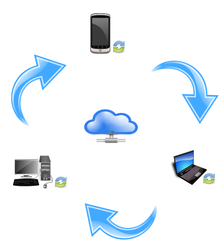

Welcome to Syncloud project page.
This tool simply connects your devices so for example picture taken on the phone will be saved on the laptop. We do it by attaching cloud storage of you choice.
Supported devices:
- Android
- Windows
- Linux
- Mac (not ready)
- iPhone (not ready)
Supported storage clouds:
- Google documents
- DropBox (not ready)
- SkyDrive (not ready)
- Flickr (not ready)
